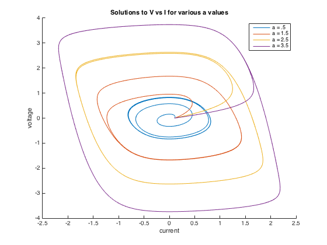
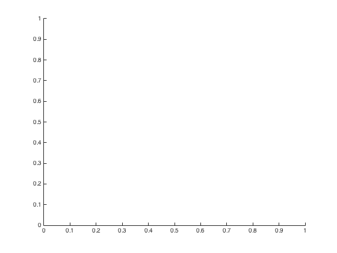

Contents
Matt McFarland
ENGS 91, lab 6, question 3
function [] = q3()
close all;clear all;
Define Constants and Equations
a = [.5 1.5 2.5 3.5]; y0 = 0.0; y0_prime = 0.1; t_0 = 0; % start time t_end = 100; % end time step_size = .01; % step size of .01 (unitless) fprintf('step size is %f\n', step_size); len = length(a); ODEfunc = @(a,y_p,y) (a .* y_p - y_p.^3 - y); % solving this
step size is 0.010000
Solve for each value of 'a'
figure() hold on for i = 1:len solutions = q3solve(a(i),step_size,t_0,t_end,ODEfunc, y0, y0_prime); voltage = solutions(:,2); current = solutions(:,3); plot(current,voltage); end hold off xlabel('current') ylabel('voltage') title('Solutions to V vs I for various a values'); legend('a = .5', 'a = 1.5', 'a = 2.5', 'a = 3.5')
end
 Function to solve this ODE system for a given a value outputs n x 4 matrix Column 1 = t value Column 2 = y value --- Z1 Column 3 = y prime value --- Z2 and Z1' Column 4 = y double prime value --- Z2'
function [solution] = q3solve(a,h,t_start,t_end,RateFunc, y0, yp0) % Use AB - AM 4 step predictor - corrector scheme points = (t_end - t_start) / h + 1; % number of points to solve for solution = zeros(points,4); % set first row solution(1,1) = t_start; solution(1,2) = y0; % Z1 solution(1,3) = yp0; % Z2 solution(1,4) = RateFunc(a,yp0,y0); % Part 1 - use RK40 to get first 4 initial values for i = 1:3 solution(i+1,1) = solution(i,1) + h; % update time value Z2_start = solution(i,3); Z1_start = solution(i,2); [Z2_next, Z1_next] = q3RK4O(RateFunc,Z2_start,Z1_start,h,a); solution(i+1,3) = Z2_next; % Z2 next solution(i+1,2) = Z1_next; % Z1 next solution(i+1,4) = RateFunc(a,Z2_next,Z1_next); % Z2 prime next end % Part 2 - get predicted values for i = 4:points-1 % Get Z1 values needed to solve for the next predicted Z1. Z1_cur = solution(i,2); Z1_back1 = solution(i-1,2); Z1_back2 = solution(i-2,2); Z1_back3 = solution(i-3,2); % Get Z2 values needed to solve for Z2_cur = solution(i,3); % Z2 is Z1' Z2_back1 = solution(i-1,3); Z2_back2 = solution(i-2,3); Z2_back3 = solution(i-3,3); % Calculate rate function for Z2 f_Z2_cur = RateFunc(a,Z2_cur,Z1_cur); f_Z2_back1 = RateFunc(a,Z2_back1,Z1_back1); f_Z2_back2 = RateFunc(a,Z2_back2,Z1_back2); f_Z2_back3 = RateFunc(a,Z2_back3,Z1_back3); % predict next Z2 Z2_next_p = ABFourStep(h, Z2_cur, f_Z2_cur, f_Z2_back1, ... f_Z2_back2, f_Z2_back3); % predict next Z1 Z1_next_p = ABFourStep(h, Z1_cur, Z2_cur, Z2_back1, ... Z2_back2, Z2_back3); % get rate function evaluated at predicted values f_Z2_predict = RateFunc(a, Z2_next_p, Z1_next_p); % correct next Z2 Z2_next_corrected = AMFourStep(h, Z2_cur, f_Z2_predict, ... f_Z2_cur, f_Z2_back1, f_Z2_back2, f_Z2_back3); % Now correct Z1 Z1_next_corrected = AMFourStep(h, Z1_cur, Z2_next_corrected, ... Z2_cur, Z2_back1, Z2_back2, Z2_back3); % Save Values solution(i+1,1) = solution(i,1) + h; solution(i+1,2) = Z1_next_corrected; solution(i+1,3) = Z2_next_corrected; solution(i+1,4) = f_Z2_predict; end end
Adams-Bashforth Four Step method. Must have values of the ODE computed. Predicts the next w_i+1 to use in the AM 4 step method
function [AB_next] = ABFourStep(h, w_cur, f_cur, f_back, f_back2, f_back3) AB_next = w_cur + h/24 .* (55 * f_cur - 59 * f_back + ... 37 * f_back2 - 9 * f_back3); end
Adams-Moulton Four Step method. Must have values of ODE computed before. Uses prediction form ABFourStep to correct and get better w_i+1
function [AM_next] = AMFourStep(h, w_cur, f_forward, f_cur, f_back, f_back2, f_back3) AM_next = w_cur + h/720 .* (251 * f_forward + 646 * f_cur ... - 264 * f_back + 106 * f_back2 - 19 * f_back3); end
Runge-Kutta 4th Order Method for solving ODE given rate function, current (y,t) and step size modified for this assignment and rate function
function [Z2_next, Z1_next] = q3RK4O(RateFunc,Z2,Z1,h,a) V1 = RateFunc(a,Z2,Z1); R1 = Z2; V2 = RateFunc(a, Z2 + h/2 * V1, Z1 + h/2 * R1); %R3 = Z2; R2 = Z2 + h/2 * V1; V3 = RateFunc(a, Z2 + h/2 * V2, Z1 + h/2 * R2); %R3 = Z2; R3 = Z2 + h/2 * V2; V4 = RateFunc(a, Z2 + h * V3, Z1 + h * R3); %R4 = Z2; R4 = Z2 + h * V3; Z2_next = Z2 + h/6 * (V1 + 2*(V2 + V3) + V4); Z1_next = Z1 + h/6 * (R1 + 2*(R2 + R3) + R4); end